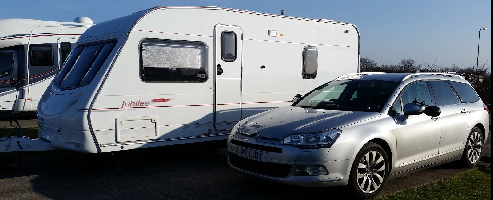

3.0HDi V6 Exclusive 5d Auto 2011
Bought this one to use primarily as a company car and what a car it was. 3.0l V6 240HP. 0 -60 in 7.6 seconds, 150mph top speed. It could burn off boy racers…with my caravan attached lol
I kept it for about 10 years and clocked up a lot of miles in the early years until I changed jobs and became more local, I think I contributed to the global oil crisis.
This is the car I owned when I joined CGI so my commute became 6 miles a day, eventually I bought a motorbike and Sharon started to use the C5 back on fore to Cardiff for her job.
